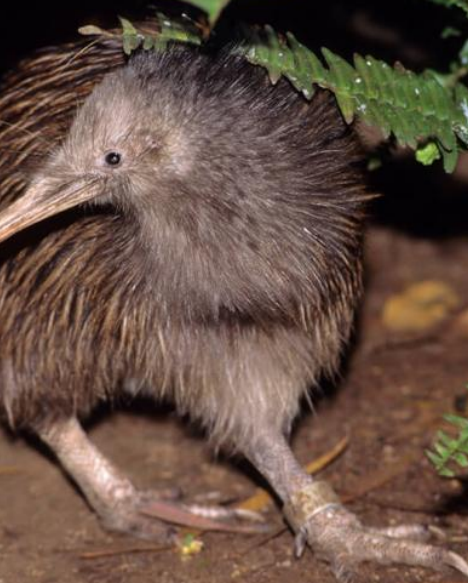
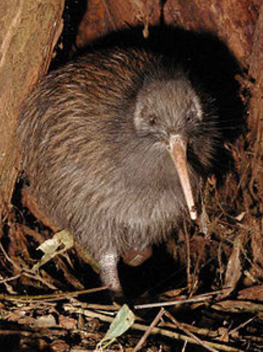
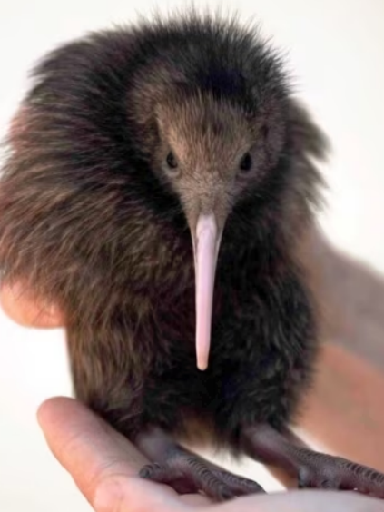

The word "kiwi" often brings to mind the image of something small,brown,
fuzzy,and found in the produce section your local supermarket.But the
kiwi is not afruit-that's kiwifruit, which is native to eastern Asia! About the
size of a chicken, the kiwi is a small,fightless, and nearly wingless bird
found only in New Zealand



HABITAT AND DIET
The kiwi lives in forested areas of New Zealand that tend
to be very steep and wet, surrounded by shrubs and trees
found nowhere else on Earth. Since it is not able to fly up
into trees to nest, rest, or escape from danger, the kiwi
makes its home in burrows in the ground of its swampy
forest or grassland habitat. The bird digs multiple burrows
within its territory, using strong toes and claws. Nest
burrows, dug early in the season, become overgrown at
the entrance to provide great camouflage by the time the
female is ready to lay her eggs.
FAMILY LIFE
Kiwi pairs use gentle grunts and snuffles with each other and their chicks, and males purr
during
mating. Pairs
do fight, and the larger female may kick the male away if she is not in the mood for his company. If
another
kiwi invades a pair’s territory, a kicking fight ensues, and kiwis have been known to fight to the
death,
although this is rare.
An adult male and female kiwi typically pair for life, but a female may choose a new male if a more
desirable
one wanders by. The male doesn't have beautiful songs or fancy feathers to attract a female.
Instead, he follows
one around constantly while grunting. If she's not interested, the female might wander off or try to
scare him
away.
Breeding season is late winter to early summer. Nests might be in hollow logs or in underground
burrows dug by
the male.
The female kiwi lays up to six eggs every year. Kiwi eggs are smooth and white, off-white, or pale
green in
color. They are also huge in comparison to the mother: one egg might reach up to 20 percent of her
weight; that
would be like a 120-pound (54 kilograms) human female giving birth to a 24-pound (11 kilograms)
baby! Compared
to the relative weights of other birds and their eggs, the female kiwi should weigh about 31 pounds
(14
kilograms) rather than its typical weight of 2 to 8 pounds (0.9 to 3.6 kilograms).